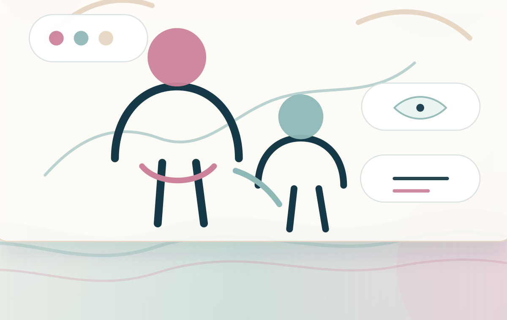

Parent Coaching
One-on-one guidance for understanding your child, your stress, and the next workable step.
- For
- Parents who feel overwhelmed, unsure, or alone.
- May help with
- Clearer language, calmer responses, and a more compassionate plan.
Support for parents raising neurodivergent children, with clinical guidance rooted in lived experience.
You do not have to navigate school meetings, meltdowns, masking, sensory needs, burnout, grief, and advocacy alone. This is a steady place to understand your child, protect your own nervous system, and choose the next step with more confidence.

Autism parent coaching and consultation is collaborative, educational, emotionally supportive, and individualized. It helps parents understand what may be happening underneath behavior while building compassionate tools that fit real family life.
The goal is not to make a child on the spectrum appear less autistic. This is not ABA-focused or compliance-centered care. The work centers connection, regulation, communication, sensory respect, family capacity, and practical advocacy. If a family is already using a behavior plan, consultation can help translate goals into affirming, emotionally safe, developmentally informed support.
I bring the expertise of a mental health professional, and the lived experience of an autism parent. That combination matters. Parents often need more than information. They need someone who can hold the clinical picture and the tender, ordinary reality of home life at the same time.
My work is trauma-informed, neurodiversity-affirming, and grounded in child development, nervous system care, and family systems. I offer compassion without judgment, practical support without perfectionism, and validation for the parent who has been carrying a great deal quietly.
Each service is designed to help parents move from confusion or crisis mode toward clarity, steadiness, and a plan that honors your child and your family.
One-on-one guidance for understanding your child, your stress, and the next workable step.
Support for patterns affecting the whole family, including siblings, routines, and shared stress.
Preparation for school conversations, documentation, accommodations, and parent voice.
Looking beneath behavior to stress, sensory load, communication, skills, and unmet needs.
Practical ways to notice sensory needs, reduce overload, and build regulation into the day.
Care for the parent nervous system, grief, guilt, isolation, and emotional fatigue.
Plain-language education about autism, masking, sensory systems, burnout, and strengths.
A grounded place to process the diagnosis, sort through recommendations, and begin gently.
This support is for families seeking a holistic, affirming approach to autism parenting support, especially when the emotional load has become too heavy to carry alone.
Autism family consultation can be clinically informed and deeply human at the same time. The work is evidence-aware, but never at the expense of dignity, attachment, culture, or nervous system safety.
Behavior is communication, context, and nervous system information. Connection helps everyone listen more accurately.
A stressed child or parent needs support for the body first. Skills land better when the system is safer.
Autistic needs are not inconveniences to erase. They are information to respect, support, and plan around.
Parent wellness, sibling dynamics, co-parenting stress, identity, culture, and inclusivity all matter in sustainable care.
Parents do not need more blame. They need a place to tell the truth, learn, repair, and try again.
Research, clinical judgment, lived experience, and family wisdom can work together without reducing a child to symptoms.
If your question is tender, practical, complicated, or hard to put into words, you are welcome to start there.
It is practical and emotional guidance for parents raising autistic or neurodivergent children. Sessions may include education, planning, regulation strategies, advocacy preparation, and support for the parent experience.
Coaching and consultation focus on parent guidance, education, family support, and practical planning. It is not a substitute for psychotherapy, diagnostic evaluation, crisis care, legal advice, or formal educational advocacy.
Yes. A formal diagnosis is not required for parent support. Many families seek help while they are noticing traits, waiting for evaluation, or trying to understand what their child needs.
Sessions can be virtual when appropriate, which can make support more accessible for busy, overwhelmed, or geographically distant families.
Yes. Co-parents, caregivers, and other important adults can attend when it supports the child and family system.
Yes. Consultation can help parents prepare for school meetings, clarify concerns, understand accommodations, organize questions, and advocate from a calmer place.
Yes. The work honors autistic identity, sensory needs, communication differences, autonomy, and strengths. The goal is support and understanding, not fixing autism.
Yes. Parent consultation can support families of autistic teens, including concerns around masking, anxiety, burnout, school stress, independence, and communication.
When appropriate and with written consent, collaboration may be possible within the scope of consultation and care coordination.
Parent and caregiver reflections about feeling understood, steadier, and less alone.
"Before working with Dr. Fab, I was really struggling and thought I was parenting all wrong. Her guidance helped us receive an autism diagnosis, which opened doors to the supports and understanding my child needed. I truly do not know where we would be without her insight, advocacy, and support."
"What makes Dr. Fab's support so meaningful is that she brings both professional expertise and personal understanding. As a clinician and a parent of a child on the spectrum, she understands the challenges families face in a way that feels genuine and deeply reassuring. Her guidance has helped us feel more confident, supported, and less alone."
"Navigating evaluations, schools, and support systems can feel overwhelming. Dr. Fab understands both the needs of the child and the systems families must navigate. Her guidance helped our child receive a diagnosis and access supports that have made a meaningful difference for our family."
Parenting a neurodivergent child can feel overwhelming, but you do not have to carry it alone. A first conversation can be simple: what is happening, what feels heavy, and what kind of support would help your family breathe again.